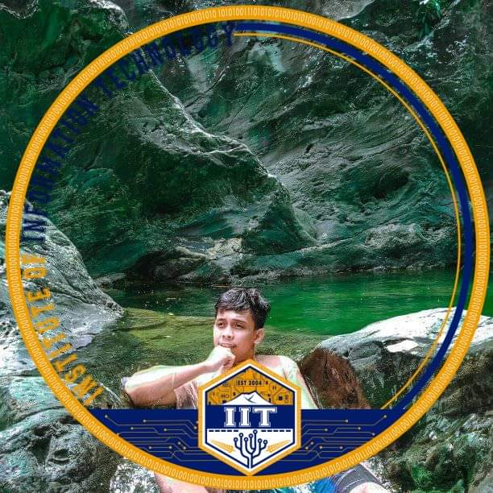

John Paul Milan
Full Stack Web Developer
Welcome to my career portfolio! I am currently a student at Partido State University earning a Bachelor of Science in Information Technology slated for a May 2024 graduation date. I hope that this portfolio provides insight into my character, programming background, analytical skills, and accomplishments.
Goals
After graduating with my Bachelors degree, I would like to obtain a position as an Software Developer/Engineer to utilize my strong background in programming.
Objectives
In this portfolio, I am aiming to:
Showcase the analytical skills I have developed through my experiences, Reflect on how these experiences have shaped my academic and professional goals and Highlight some of my accomplishments and diverse experiences
